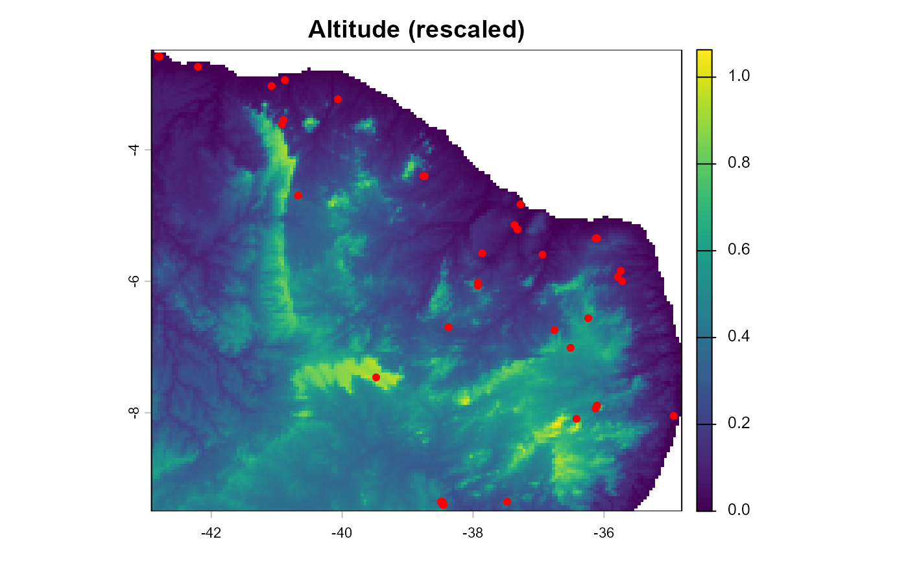

Landscape and genetic data for 37 sampled populations of the stingless bee
genus Melipona in Brazil, bundled with terradish so that help
pages can run complete worked examples on a small real data set. The four
objects are
stored separately in the package data, so data(melip) loads all of
them into the calling environment at once.
Usage
data(melip)Format
Four objects, loaded together by data(melip):
melip.altitudeA wrapped
terra::SpatRaster, 156 rows by 180 columns at 0.045 degree resolution, covering roughly 42.9 to 34.8 degrees west and 9.5 to 2.5 degrees south in unprojected longitude/latitude. Values are altitude already rescaled to roughly the unit interval (range 0 to 1.06), not meters. Of the 28,080 cells, 22,443 are land and 5,637 areNA(ocean), and only the non-NAcells enter the conductance graph.melip.forestcoverA wrapped
terra::SpatRasteron the same grid, giving forest cover as a proportion (range 0.004 to 0.948).melip.coordsA wrapped
terra::SpatVectorof 37 point locations, one per sampled population, in the same longitude/latitude coordinate system as the rasters.melip.FstA symmetric 37 by 37 numeric matrix of pairwise \(F_{ST}\) among the same 37 populations, with a zero diagonal and no dimnames. Values range from -0.062 to 0.280. Four off-diagonal entries are slightly negative, which is a normal outcome of unbiased \(F_{ST}\) estimators when true differentiation is near zero. Gaussian distance models such as
mlpecan retain these estimates. Their presence is one reason not to treat this matrix as automatically admissible forgeneralized_wishart.
Source
Distributed with the radish package by Nathaniel S. Pope
(https://github.com/nspope/radish). The original study that
collected and genotyped the Melipona samples is not recorded in
the package sources.
Details
The two rasters are stored as terra::wrap()ped objects because a live
SpatRaster holds an external pointer that cannot be serialized into a
package. Call terra::unwrap() on each one before use; the same
applies to the SpatVector of coordinates.
The rasters are unprojected, so distances are in degrees rather than meters.
That matters for any function whose output carries a distance unit: the
sigma reported by gaussian_scale_summary, for instance,
is in degrees for this data set. Reproject before interpreting the fitted
Gaussian raster-smoothing scale as a distance.
The altitude layer arrives pre-rescaled, but the two layers are still on
different scales, so run scale_covariates before fitting, as
the fitting examples in this package do.
The raster layers are named "altitude" and "forestcover",
so c(altitude, forestcover) can be used in a model formula
directly. Make sure layers carry the names you want before calling
scale_covariates, because the stored scaling is keyed by
layer name and model formulas refer to layers by name.
Three of the 37 sites fall in a raster cell that already holds another
site, and more do so on a coarsened raster.
conductance_surface warns when sites share a cell. The
examples keep one site per cell with
!duplicated(terra::cellFromXY(covariates, terra::crds(coords))).
See also
conductance_surface for turning these layers into a
graph, and terradish for fitting a model to them. See
vignette("v03-mlpe-pairwise-distance", package = "terradish") for the
full worked example with these data.
Other datasets:
individual_salamanders,
ohio_ponds
Examples
data(melip)
# rasters and points are wrapped for storage; unwrap before use
altitude <- terra::unwrap(melip.altitude)
forestcover <- terra::unwrap(melip.forestcover)
coords <- terra::unwrap(melip.coords)
altitude # 156 x 180 grid, values on ~[0, 1]
#> class : SpatRaster
#> size : 156, 180, 1 (nrow, ncol, nlyr)
#> resolution : 0.045, 0.045 (x, y)
#> extent : -42.9125, -34.8125, -9.4975, -2.4775 (xmin, xmax, ymin, ymax)
#> coord. ref. : +proj=longlat +ellps=WGS84 +towgs84=0,0,0,0,0,0,0 +no_defs
#> source(s) : memory
#> name : altitude
#> min value : -0.000118
#> max value : 1.063207
nrow(coords) # 37 sampled populations
#> [1] 37
dim(melip.Fst) # 37 x 37 pairwise Fst
#> [1] 37 37
range(melip.Fst) # note the small negative values
#> [1] -0.06175281 0.27973199
# MLPE can retain the negative estimates in this pairwise-distance response
Fst <- melip.Fst
round(Fst[1:4, 1:4], 3)
#> [,1] [,2] [,3] [,4]
#> [1,] 0.000 0.009 0.104 0.048
#> [2,] 0.009 0.000 0.109 0.049
#> [3,] 0.104 0.109 0.000 0.052
#> [4,] 0.048 0.049 0.052 0.000
terra::plot(altitude, main = "Altitude (rescaled)")
terra::points(coords, pch = 19, cex = 0.7, col = "red")

# The layers are already named; scale them before fitting.
covariates <- c(altitude, forestcover)
names(covariates)
#> [1] "altitude" "forestcover"
covariates <- scale_covariates(covariates)
# Sites that share a raster cell with an earlier site
sum(duplicated(terra::cellFromXY(covariates, terra::crds(coords))))
#> [1] 3